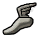
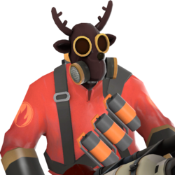
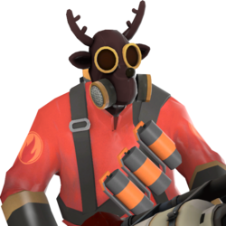

No jogo, existem 9 classes. Elas são dividas em três áreas de combate: Ataque, Defesa e Suporte. Todas podem ser utilizadas além de seu papel principal, no entanto, dependendo de
sua estratégia.
Ataque: As classes ofensivas (Scout, Soldier e Pyro) são a principal força de ataque do time.
Independendo de sua função, se está atacando um ponto de controle ou capturando a Inteligência, essas classes são especializadas
em ataque e destruição. Scouts têm a habilidade de capturar pontos de controle duas vezes mais rápido do que qualquer outra classe.
Soldiers têm um grande poder de destruição com seu Lança-foguetes. Pyros podem atear fogo em inimigos em ataques surpresa.
Defesa:As classes defensivas (Demoman, Heavy e Engineer) servem para inibir o acesso inimigo e mantê-los distante de pontos importantes nos mapas.
No total, este grupo tem mais poder de fogo do que qualquer outro, podendo concentrar seu ataque em um momento importante.
Demoman podem proteger áreas com suas sticky bomb e detoná-las quando for mais apropriado. Heavies são excelentes para utilizar sua Metralhadora
Giratória contra tropas e reter a força de ataque do inimigo.
Engineers podem construir Sentinelas com grande poder de fogo, Teleporters e Fornecedores.
Suporte:As classes de suporte (Medic, Sniper e Spy) são o eixo principal do time.
Elas oferecem suporte para as classes de ataque e defesa, o necessário para a batalha e
podem mudar o rumo da partida em apenas um segundo. Protegendo seu time contra o ataque
do inimigo ou mantendo seu time com saúde, é sempre útil mantê-la viva. Medics tem o poder de cura
para seus aliados e estender sua vida em até 150% além de sua vida máxima. Snipers podem eliminar ameaças a distância e usar o
Jarratê para extinguir aliados e aumentar o dano feito em seus oponentes. Spies podem infiltrar linhas inimigas,
desativando construções e apunhalando oponentes por trás.
As classes
Scout 

Nascido e criado em Boston, Massachusetts, o Scout é um rápido valentão e um fã de baseball com uma atitude arrogante.
Muito rude, ele parece pensar que pode cuidar de tudo e até se acha mais forte do que ele é, mas ele é um adversário a altura.
Ele é o mercenário mais rápido da equipe e no campo de batalha, com a habilidade de realizar um Pulo Duplo, o Scout deixa o
ponentes mais lentos para trás com facilidade assim como o ajuda a navegar pelo terreno e desviar de projéteis inimigos.
Junto com sua Espingarda, e sua Pistola, o Scout é perfeito para táticas agressivas e em flanquear oponentes, e ele é excelente em ataques rápidos e em fugas por sua natureza rápida, capaz de chegar perto, atirar sua Espingarda e fugir sem ser notado.
O Scout é uma excelente escolha para completar os objetivos rapidamente. Ele captura pontos de controle e empurra a
bomba 2 vezes mais rápido que qualquer outra classe. E sua velocidade e agilidade faz dele um apanhador natural da Inteligência;
com seu duplo pulo ele pode leva-lá por caminhos inesperados.
Soldier 
O Soldier é um patriota psicótico do centro dos Estados Unidos. Resistente e bem armado, ele é versátil, capaz de defender e atacar, e é uma ótima classe para se familiarizar com o jogo.
O Soldier é bem conhecido pelo seu espetacular Salto com Foguetes. Em detrimento de bom senso e julgamento, o Soldier pode atirar um rocket nos seus pés e lançar-se para o céu ao custo de um pouco de saúde. Esta habilidade permite o Soldier ir para lugares inesperados e chegar e áreas fora dos limites até mesmo para o Double Jump do Scout.
As duas granadas do personagem não podem ser usadas pela classe em nenhuma outra circunstância que não seja usando a provocação Kamikaze do Compensador ou Plano de Fuga.
Pyro
  
O Pyro é um piromaníaco resmungante de origem indeterminada que tem uma paixão ardente para todas as coisas relacionadas com o fogo.
Como mostrado em Conheça o Pyro, o Pyro parece ser insano e delirante, vivendo em um mundo de fantasias utópico conhecido como Pyrolândia.
O Pyro é especialista em combater inimigos a curta distância usando um Lança-chamas caseiro. Inimigos postos em chamas sofrerão de afterburn
e irão tomar dano adicional com o tempo, permitindo ao Pyro para exceder em táticas de bater-e-correr. Devido ao curto alcance do lança-chamas,
o Pyro é mais fraco em longo alcance e depende fortemente em emboscadas e tomar rotas alternativas para pegar oponentes desprevenidos.
Embora classificada como uma classe de ataque, o Pyro traz algumas fontes de utilidade para o campo de batalha.
A rajada de ar do Pyro, por exemplo, pode desviar projéteis, extinguir companheiros de equipe em chamas, e reposicionar forçadamente
qualquer inimigo, incluindo um sobre os efeitos da ÜberCarga que concede invencibilidade.
Por causa dos inimigos atingidos por fogo estarem visivelmente incendiados, o Pyro é a melhor classe para spy-checking,
até mesmo uma pequena baforada de chamas pode anular a invisibilidade e disfarce de um Spy. Além disso, o Pyro pode usar a Quebra-casas,
Martelão ou o Aniquilador Neônico para proteger construções do Engineer contra um Sabotador do Spy ou usar a Detonadora ou Queima-roupa para pular
em lugares normalmente inacessíveis.
O Pyro usa um terno forrado de amianto que fornece proteção contra o fogo de outros Pyros, flechas flamejantes do Caçador,
tiros carregados do Avacalhador 5000, embora ele não adicionar nenhuma resistência ao dano direto levado pelas chamas do lança-chamas/explosões.
Um Pyro pode contra-atacar um inimigo Pyro usando o a Escopeta padrão. As três granadas incendiárias no modelo do personagem do Pyro são puramente
cosméticas e não pode ser usadas.
Demoman
Um especialista em explosões bebedor de sidra da cidade escocesa de Ullapool, o Demoman é um dos mais versáteis membros da equipe.
Ele é um mestre do explosivo,
sendo muito bom em combate indireto de média distância graças às explosões de seus projéteis. Armado com seu Lança-granadas e Stickbombs, o
Demoman usa apenas o seu olho bom e conhecimento do ambiente que o circunda para detonações que mandam os inimigos voando para o céu,
geralmente em vários pedaços. Aqueles que conseguem passar por seus explosivos, no entanto, se surpreendem com a proficiência do Demoman
em combate corpo a corpo, sendo uma das classes mais letais neste tipo de combate no jogo, com uma variedade de armas corpo a corpo destraváveis
em seu arsenal.
O Demoman, como seu nome sugere, é excelente em destruição rápida: ele é capaz de fazer com que suas granadas quiquem em paredes para acabar com sentinelas
inimigas enquanto fica seguramente fora de vista atrás de uma curva. Suas Stickybombs são a ferramenta perfeita para defender áreas, mantendo oponentes
longe de carrinhos, pontos de controle e maletas de inteligência que ele considera zona proibida aos adversários.
Heavy
 
Grandão, punhos de aço, vindo da gloriosa União Soviética, o Heavy também conhecido como Heavy Weapons Guy
(cara das armas pesadas), como seu nome sugere, é a classe mais pesada no Team Fortress 2, tendo a maior estâmina, a maior arma, e a velocidade
a pé mais vagarosa. Seu poder de fogo é altamente impressionante, permitindo a ele rápidamente matar os inimigos opositores,
covardes e pequeninos em segundos. Porém, girar e atirar com sua Metralhadora Giratória traz a sua já não impressionante velocidade
ao ritmo de uma lesma, fazendo-o um grande alvo para inimigos fora do seu alcaçe de fogo. Mesmo que largo e impossante, i
sto faz do Heavy vulnerável por si só, mas com seu amigo Medic e uma equipe bem coordeenada ajudando a repelir o inimigo,
ele pode ser uma imparável incorporação de destruição. O Heavy pode até beneficiar seus colegas de equipe em maneiras que
não envolvam balas e socos. Periódicamente ele pode jogar pratos de Sandvich, deixando com que seus colegas de equipe recebam
uma turbinada muito bem vinda nos pontos de vida.
O Heavy é argumentávelmente o 'rosto' do Team Fortress 2, aparecendo mais prôeminente em caixas de jogo e materiais promocionais assim como estando no primeiro vídeo do Conheça o Time e todos feitos até então.
Engineer
O amável texano de fala mansa e com jeito para todas as coisas mecânicas, o Engineer (nome real: Dell Conagher)
prefere construir e manter construções que beneficiam sua equipe a se engajar em combate direto. As várias bugigangas
do Engineer incluem a Sentinela, uma metralhadora automatizada que atira em qualquer inimigo ao alcance, o Fornecedor,
um dispositivo que reabastece a saúde e munição de colegas próximos e o Teleporte que teletransporta rapidamente os seus
companheiros para a batalha.
No entanto, os dispositivos engenhosos do Engineer estão sob constante ameaça de explosivos, Spies inimigos e Heavies com ÜberCarga;
Um bom Engineer deve manter a sua arte com um olhar atento e em bom estado de conservação em todos os momentos. Quando o Engineer
precisa sujar as mãos, o seu trio de armas básicas, mas capazes combinadas com a ajuda de suas construções fazem dele capaz de manter sua própria luta.
O Engineer também é capaz de transportar seus equipamentos já construídos e por em novos locais, à custa de uma menor velocidade enquanto os transporta.
As construções são também vulneráveis durante o processo de transporte, pois elas serão destruídas se o Engineer for morto. Construções
também precisa de algum tempo para reimplantar depois de ser transportado.
Mesmo sendo visto como uma classe defensiva, o Engineer tem uma seleção de armas de alta tecnologia que o
permitem destruir projéteis ou construir Mini-Sentinelas de Combate, dando a ele grande utilidade nas linhas
de frente. Seus Teletransportadores também são de grande importância para o sucesso do time, tanto no ataque quanto na defesa, pois permitem que as classes mais lentas cheguem a batalha rapidamente.
Medic
O Medic é um homem teutônico da medicina. Embora ele possa ter uma aderência tênue às éticas da medicina, ele é no entanto a classe primária de cura da equipe. Apesar de sua Arma de Seringas e Serra de Ossos não serem as melhores armas para o combate direto, ele ainda pode ser normalmente encontrado nas linhas de frente, curando companheiros de equipe machucados enquanto tenta ficar longe do combate.
Quando sua Arma Médica estiver apontada para um aliado, companheiros de equipe machucados vão rapidamente regenerar vida. Companheiros de equipe que já estão em plena saúde terão a vida expandida além do limite normal, indo até 150% da sua capacidade base de saúde. Aliados que não receberam dano recentemente serão curados mais rapidamente, encorajando retiradas estratégicas ao serem feridos.
Ao curar aliados, o Medic vai preenchendo a barra de ÜberCarga, que pode ser preenchida mais rapidamente ao curar aliados machucados e aliados sem sobrecura. Quando a barra de ÜberCarga está completa, a Arma Médica começará a cintilar, indicando que ele pode ativar uma única carga que beneficia tanto ele quanto seu paciente por 8 segundos. Uma ÜberCarga pode oferecer invulnerabilidade temporária (Arma Médica), acertos críticos garantidos (Kritzkrieg), cura mais rápida e imunidade contra coice (Quebra-galho) ou resistência aumentada contra danos específicos (Vacinadora).
Apesar do Medic não poder curar a si mesmo, exceto pela ÜberCarga da Quebra-galho, ou usando a provocação Oktoberfest da Kritzkrieg, ele é capaz de regenerar sua vida lentamente, e é a única classe capaz de fazer isso naturalmente. Quanto mais tempo um Medic ficar fora de combate e evitar tomar dano, maior a vida que ele recuperará passivamente. Um Medic machucado regenerá vida em uma taxa de 3 pontos de vida por segundo, aumentando nos próximos dez segundos até um máximo de 6 pontos de vida por segundo (essa taxa pode ser afetada positivamente pela Amputadora, ou negativamente pela Blutsauger).
Sniper

Vindo do país perdido da Nova Zelândia e criado no interior imperdoável australiano, o Sniper é um atirador duro e preparado. O papel do Sniper no campo de batalha é eliminar alvos inimigos importantes de longe usando o Rifle de Sniper e sua habilidade de matar um alvo instantaneamente com um headshot. Ele é efetivo à longa distância, mas enfraquece com a proximidade, onde ele é forçado a usar sua Submetralhadora ou sua Kukri. Como resultado, o Sniper tende a ficar em lugares altos ou difíceis de ver, onde ele pode facilmente atirar em inimigos.
Enquanto o Sniper tende a se isolar das linhas de frente, o Caçador o auxilia a mover-se adiante no campo, atirando rajadas de flechas enquanto os poderes do antigo e misterioso Jarratê pode aumentar o dano causado aos inimigos por ele tanto quanto seus colegas de equipe.
Spy

Vindo de uma região indeterminada da França, Spy é um aficionado por ternos de bom corte e em facas de corte melhor ainda, fazendo uso de truques e furtividade para ajudar o time. Usando seus relógios de Cloaking, ele pode se tornar invisível e até mesmo fingir a própria morte, deixando os inimigos desavisados e com a guarda abaixada. Seu kit de disfarces o deixa assumir a forma de qualquer classe, permitindo a ele misturar-se e esgueirar-se por trás de seus inimigos antes de literalmente apunhalá-los pelas costas. De fato, um rápido backstab (facada, punhalada nas costas) por trás com a fiel Faca do Spy vai matar qualquer inimigo em um único golpe.
Além de ser capaz de assassinar inimigos chave de forma rápida e eficiente, o Spy é ótimo contra o Engineer. Usando seu Sabotador, ele pode desativar suas construções, drenando lentamente sua saúde até elas serem destruídas, a não ser que sejam consertadas por Engineers ou Pyros usando o Quebra-casas.
Outro alvo comum do Spy é o Heavy. Enquanto o Heavy tem uma de suas Metralhadora Giratórias rodando, ele se move em uma velocidade mais lenta que o normal — esta velocidade junto com a distração da batalha dá um ótima opoturnidade para dar um backstab. O Sniper também um grando alvo do Spy devido ao fato de ele não se mover muito quando está mirando com seu Rifle de Sniper.
|
|